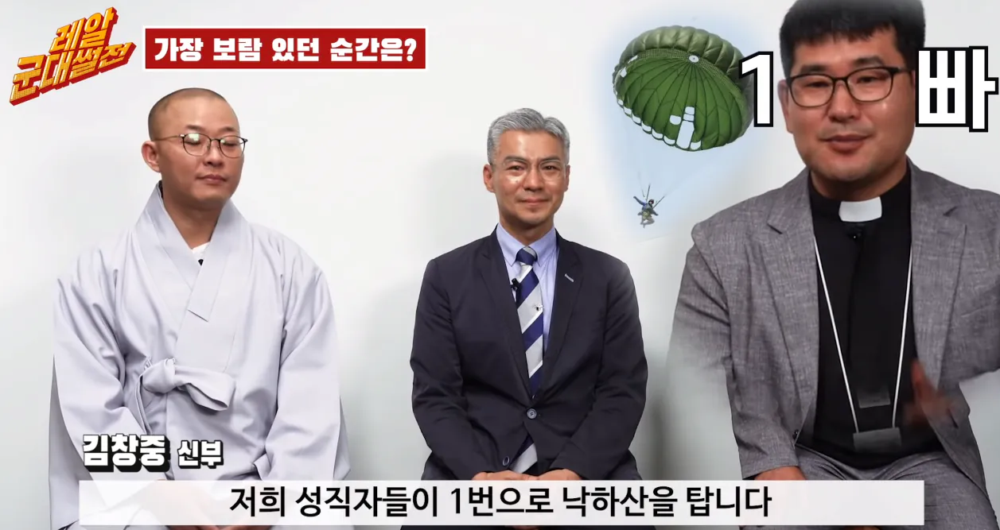

사실상 살아있는 토템 그 자체라서 ㅋㅋ

사실상 살아있는 토템 그 자체라서 ㅋㅋ

공수교육 받고 있으면 공수 받은 군종 장교들이 와서 님들 강하 잘하세요 하면서 오예스 줬는데ㅜㅜ
아니 진짜로??? 개쩌네..
안무섭나
무서우면 믿음이 부족한거야
하나님 곁으로!
그러고보니 훈련할때 있던거 같기도 하고 없던거 같기도 하고...
시끄럽고 멀미나서 걍 빨리 뛰고싶던데
ㅎㅎ 김창중신부님 공수기본 749기임
라쿤 아파트 쥐병 같은 거라는 나쁜 말은 금지금지
TMI로 특전사 군종장교들이랑 같이 근무하는 부사관들은 보통 군종부사관이 아니라 특전사에서 정년전역 1, 2년 남은 부사관을 앉혀준다.
원래 공수훈련 마지막 강하에서 웃거나 엄지척만 해도 욕하고 호통치고 사진은 꿈도 못꾸는데, 군종장교들은 원사님들이 강하포인트 먼저 쪼르르 가서 기다리고 있다 챱챱 찍어주고 감. 갈때까지 교관도 조용히 있다 원사님 가고나면 뭐라한다고 함 ㅋㅋㅋㅋㅋ
군대에서 본 분들은 ㄹㅇ 참종교인 같더리
보통 군종장교가는분들은 재입대하는분들이라
ㄹㅇ 종교행사 가서 말하는거보면 죄다 재입대였던것 같음
원불교 아저씨가 썰 재밌게 풀었던거 같은데 종교 그만두고 싶었다고
군대에서 헬기타서 줄잡고 뛰어내리는
패스트로프는 해봤는데
이건 지상훈련이 더 좆같고
실제 헬기는 너무 쉬웠거든
공수는 패스트로프보다 높이나 체공시간도 더 길고
낙하산 잡고 조종해야하는게 훨씬 어렵겠지만
공수는 훈련을 어떻게 할까
이것도 훈련보다 실제 비행기 타는게 더 쉬울까
4주정도하는데 1 2주차에는 지상훈련이라해서 뺑뺑이 구르고 착지법 이런거 함
3주차에는 막타워 강하 마지막주는 강하하는 주
고소공포증 없는사람이면
사고위험 거르고
어느거나 실제가 편하고
훈련이 좆같음ㅋㅋㅋ
깜짝이야..